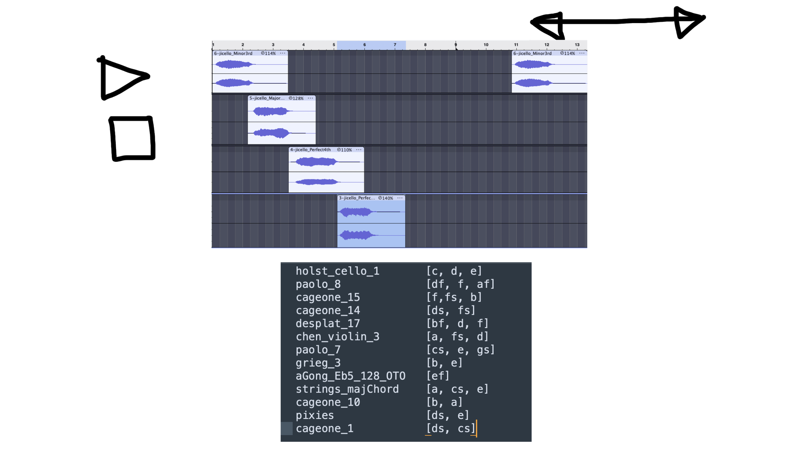
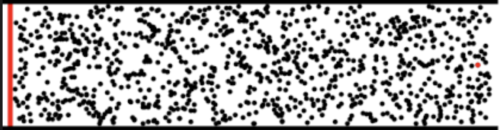
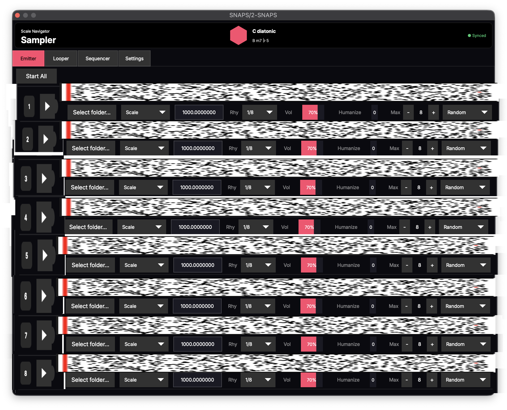
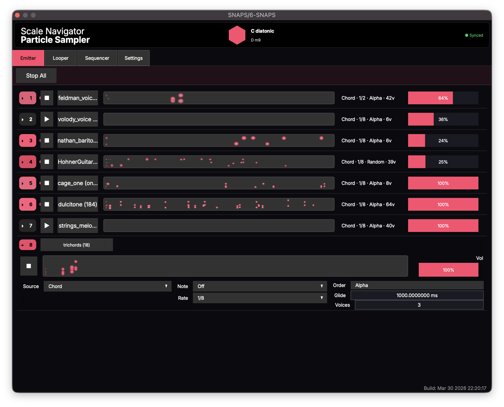

Role · Designer & developer (interaction, product, sample corpus, plugin port)
With · Nathan Ho (SuperCollider engine, glide-curve research)
Platforms · SuperCollider instrument → VST3 / AU (macOS, Windows)
Problem
SNaPS is a sampler that never restarts a sound to follow the harmony. When the chord changes underneath a sustaining sample, the sample doesn't retrigger; it leans into the new scale, each voice bending by the smallest interval that fits. A sampler that modulates the way a held note does, not the way a MIDI clip does.
As I mentioned to a friend after Nathan and I had begun development: "Snaps! Scale Navigator particle system, a super collider back end coded by Nathan ho. Basically, samples trigger at regular intervals. The script is listening for changes to scale Navigator. When the scale changes, the script will transpose the currently playing scales. So that they fit the harmonic context of the current scale. [For a] particular genre, I just have to choose samples that fit in that particular genre."
Insight
Every sampler assumes a note begins from scratch: you trigger a sample, it plays, it ends. Harmony doesn't respect that boundary. If the chord changes while a violin is sustaining, the violin doesn't restart; it keeps singing through the change. A conventional sampler either lets the already-sounding sample clash or cuts it and retriggers, and you can hear the retrigger. I wanted the sample to stay alive across the change, built on recordings rather than synthesized notes: a glide is trivial in the synth domain, but samples carry texture and memory in ways oscillators don't.
Prototype
SNaPS started as a SuperCollider instrument that Nathan Ho and I built together, and the idea itself descends from Ho's conception of sound dumplings: hand-assembled collages of samples repitched into a common key and arranged into a single gesture. A finished dumpling is a static object, like hardened lava. The question behind SNaPS was what happens if you keep it molten: live, mobile blobs that collage themselves automatically and re-pitch as the harmony moves.
Before development began I wrote the whole system out as a design document, the "Sample Particle System": every sample is a particle born knowing its pitch classes, checked against the Current Scale when it triggers and re-checked at every scale change, transposing when it can and exiting when it can't. The spec already contained the ramped transposition that became the glide, orchestration limits drawn from FFT analysis (any number of highs, five mids, one low "to avoid bass muddiness"), panning that migrates so voices stay evenly distributed across the stereo field, and, in a closing list of ideas to explore, the BPM metadata that later grew into the polyrhythm system.
Nathan built the engine, and Scale Navigator integration was there in week one ("Debounce scale changes from MIDI," March 26, 2021). I owned the sample corpus, the metadata standard, and my own performance file; my first commit is "snaps.scd with all the samples!!!!"
The repo lives under nhthn/, Ho's account, because we agreed from the start that it was open source. For years I performed out of an instrument hosted in my collaborator's GitHub, and contributed engine code back through reviewed PRs.
Failure
For four years the SuperCollider version was my primary live instrument: pretty much everything sample-based on my YouTube and SoundCloud before 2026 is running SNaPS SuperCollider.
Then it hit a ceiling. By late 2025 I'd extended Ho's rhythm grid into my own polyrhythm system, with Clock Divide / Multiply and humanize-rhythm parameters. Push it hard enough and it fell over: 16th notes at 250 BPM and the whole thing would crash.
On February 17, 2026, Ho and I spent two hours debugging it. Ho did the worst-case arithmetic out loud: 180 BPM × tempo factor 2 × 32nd-note subdivision = "one note every 5.2 milliseconds. So, yeah, I can see why this would cause problems." Then he couldn't reproduce the crash on his Linux desktop at all: "it doesn't look like this is caused by BPM being too high… there's a different problem going on here." His prime suspect was the humanize routine's wait-time floor I'd written myself three months earlier. Whatever the exact cause, the diagnosis was the same: the instrument had outgrown SuperCollider. The plugin's first commit is three weeks later, March 8, 2026.
Iteration
Every sample the engine plays has to be born knowing its own pitch content, so it can be born into the current scale. For years that meant tagging thousands of samples by hand with their pitch classes. I had the corpus and no way to listen to each one.
The unblock came from Ho, in early 2026, when he pointed me at Basic Pitch, Spotify's open-source ML transcription model. I built the Librarian around it: a headless tool (MVP January 31, 2026) that auto-transcribes a sample library into sample→pitch-class-set records. The interface couldn't scale until metadata became automatic.

The Librarian's data model, sketched on the concept canvas: each sample paired with its pitch-class set (holst_cello_1 [c, d, e], paolo_8 [df, f, af]…).
Final solution
When the harmony changes, a texture of dozens of voices has to decide where each one moves. The naive rule is "transpose each sample to the nearest scale tone." That produces a wandering, arbitrary result, voices leaping in whatever direction is technically closest. Real ensembles don't sound like that. Trained voices move by the least sufficient motion, with a slight downward gravity that corpus studies find in actual voice leading. So I made the modulation a cost function instead of a rule:
the cost of a candidate transposition is its size in semitones plus a fixed penalty for upward motion; candidates are confined to a bounded range wider below than above; ties resolve downward.
Small moves beat large ones. Downward moves beat upward moves of equal size. The aggregate texture modulates the way an ensemble does, by the least sufficient motion.
The glide itself carries the same logic. The most expressive curve is entirely Ho's idea, from his oddvoices research: a large ascending glide first dips a quarter semitone before rising, and a descending glide overshoots half a semitone below its target and settles up into it. It's how instrumentalists actually connect pitches, and it made samples glide like a voice, not a machine.
What I rejected: a single hard-coded glide (mechanical, wrong for half the material), and a UI-first plugin design. The interface barely changed from prototype to release. Almost all the design work happened in the behavior.
Design decision
The plugin's main view makes the particle metaphor visible. Each dot is one playing sample traveling left to right across its lane: its life begins at the left edge and ends at the right, so long samples drift while short ones streak past, and the lane reads as a field of particles moving at different speeds. A sample with more than one pitch class stacks two or more dots vertically, and every dot grows and shrinks with its sample's loudness, so the density and dynamics of the texture are legible at a glance.

The first sketch of the emitter view: every dot is one playing sample, born at the left edge, gone at the right.

The sketch dropped into a full wireframe: eight emitter lanes, each its own particle field (March 29, 2026).

The working build two days later: stacked dots for multi-pitch samples, dot size following loudness.
Design decision
There's a case a cost function can't rescue: a sample whose pitch content simply can't fit the new scale at any transposition. The safe move is to mute it. I refused to, because a muted voice is a hole in the texture and a silent admission that the tool broke. That refusal is in the original spec: instead of fading out, an incompatible sample could be band-pass filtered down to whichever of its pitches survives in the new scale, sweeping back open when the harmony lets it back in. The stutters and Doppler exits are descendants of that filter sweep.
Instead, a sample that can't fit gets a theatrical exit: a stutter, a filter sweep, a Doppler-style pitch drop, stackable. The sound leaves on purpose, audibly, as a gesture you can score with. In SNaPS the modulation is the event: the moment the harmony changes is the thing you hear, a texture of dozens of voices leaning into the new chord and a few of them making a scene on the way out.
The modulation is the event: dozens of voices leaning into the new chord, a few making a theatrical exit.
Outcome
In the studio I routed SNaPS multitrack through Loopback into separate Ableton channels, so it worked as a source, not just a live rig. In 2025 the engine was ported into Ensemble Jammer as browser instruments, and in 2026 it became a plugin, so the workflow I'd performed with for five years finally packages for any DAW and subscribes to Dashboard's shared harmonic state like the rest of the ecosystem.
Samplerate Counterpoint, an album made entirely in SNaPS. The samples bend and transpose across time the way voices move in counterpoint, and since the samples can themselves be recordings of counterpoint, it becomes a counterpoint of counterpoints.
Ho, writing about sound dumplings on his own site: "If you do want to hear examples of sound dumpling music, I recommend checking out my friend Nathan Turczan's work under the name Equuipment. He took my sound dumpling idea and expanded on it by introducing key changes and automated collaging of samples in SuperCollider, and the results are very colorful and interesting."
The crash that triggered the port isn't cleanly solved; it's outrun, moved into a language where the timing math doesn't fall over. The plugin's preset system is an open problem. And the Librarian's transcription is only as good as Basic Pitch is: a mistagged sample is born into the wrong scale.
Nathan Ho: the SuperCollider engine, the glide-curve research, the Basic Pitch pointer, and the February 2026 pair-debugging session. Michael Szanyi: the Webb Schools dance-show set. The original repo is open source under Ho's account.
Scale Navigator Dashboard — the harmonic state that SNaPS subscribes to
Tonalign — MIDI pitch correction with the same scale-aware logic
Ensemble Jammer — networked instruments that follow the shared harmonic state
NotesChordScales — the inverse direction: play notes, and the system infers the scale